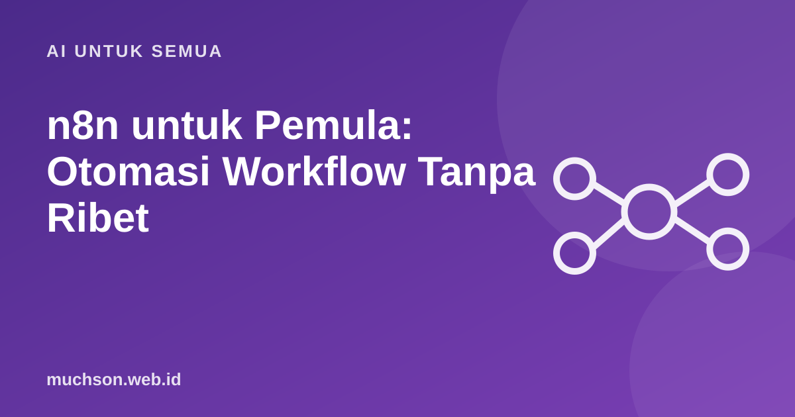

Beranda › Artikel › AI untuk Semua
AI untuk Semuan8n untuk Pemula: Otomasi Workflow Tanpa Ribet
Memindahkan data dari satu aplikasi ke aplikasi lain secara manual membuang waktu dan rawan salah. n8n memungkinkan Anda menyusun alurnya secara visual: hubungkan kotak-kotak, jalankan, dan pekerjaan berulang berjalan sendiri.

Konsep dasar
- Trigger: formulir terkirim, email masuk, jadwal harian, atau webhook.
- Node: satu langkah, misalnya baca spreadsheet, kirim pesan, panggil API, atau ubah format data.
- Credential: izin akses ke layanan, disimpan terpisah dari alur.
- Execution: catatan setiap kali alur berjalan, berguna untuk mencari penyebab kegagalan.
Tiga contoh workflow yang berguna
Kapan n8n cocok?
Tips awal
Tanya jawab
Apakah n8n gratis?
Tersedia opsi hosting sendiri dan layanan cloud berbayar. Ketentuan lisensi dan harga bisa berubah, periksa situs resminya.
Apakah perlu bisa coding?
Untuk alur sederhana tidak perlu. Untuk logika khusus, kemampuan menulis sedikit kode sangat membantu.
Apa bedanya n8n dengan Zapier atau Make?
Ketiganya platform otomasi. Perbedaannya pada model harga, opsi hosting sendiri, fleksibilitas, dan ekosistem integrasi. Pilih berdasarkan kebutuhan dan anggaran.